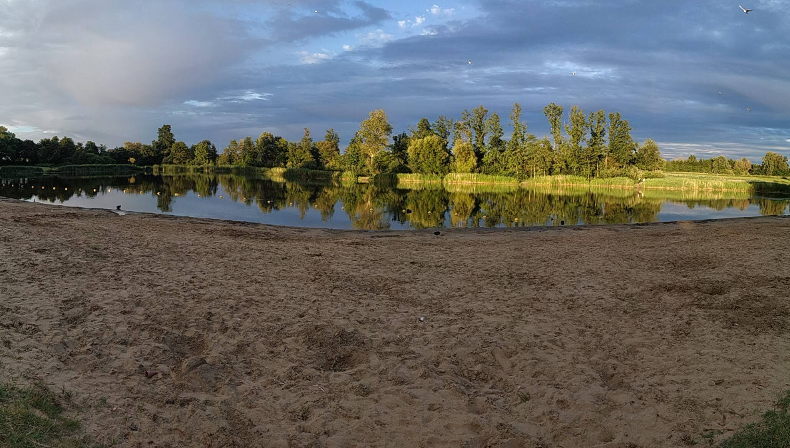

Welkom bij de Fietstocht van het Vierkantje!
Vandaag stappen we samen op de fiets voor een ouderwetse tocht met veel gezellige stops. Voel je vrij om elders te pauzeren en te genieten. Zorg wel dat je tussen 16:00 en 17:00 terug bent: om 17:00 starten we met live muziek en BBQ.
Wie ben jij?
Naam
Start
Vertrek op Herenstraat, langs Slagerij de Rooy.
Sla op de rotonde linksaf richting Bergschenhoek.
Volg de Boterdorpseweg en ga 3 rotondes rechtdoor.
Vraag 1: Welk dier kom je op de route tegen?
Jouw antwoord
Fiets links de heuvel op langs Bergschenhoek BV, rechtsoversteken en onder de tunnel door.
Rotonde rechtdoor op de Bergweg-Zuid in de richting van Hillegersberg.
Vraag 2: Hoe heette het verzorgingstehuis wat hier rechts van de weg stond?
Jouw antwoord
Sla linksaf de Bosweg in.
Neem het eerste fietspad links.
Ga voor Horsecenter Pirouette rechtsaf het Runderpad op.
Vraag 3: Hoeveel witte vlaggen hangen hier?
Jouw antwoord
Familierestaurant Bergsche Plas
Terras aan het water – perfect voor een tussenstop! ⭐ 4,2 (2.160 reviews)
Rij langs restaurant De Bergscheplas, parkeerplaats op, rechts aanhouden en het fietspad op.
Bovenaan het fietspad linksaf.
Einde fietspad de weg oversteken Vaandragerdreef op.
Vraag 4: Hoeveel volle badkuipen pompt het gemaal per minuut?
Jouw antwoord
Na café Oud Verlaat, rechtsaf naar beneden Vlietkade op.
Vraag 5: Waar is de autocross?
Jouw antwoord
Vervolg op de Vlietkade tot aan de kruising met de Nesseweg.
Ga op de kruising linksaf richting Zevenhuizen.
Rechtsaf fietspad op richting Nieuwerkerk aan de IJssel.
Vraag 6: Wat voor dier staat erin de voortuin aan de rechterkant?
Jouw antwoord
Sla linksaf richting de volleybal velden het Jacques de Graaffpad op.
Einde fietspad rechtsaf langs de volleybal velden.
Ga linksaf fietspad op langs de Siciliëboulevard. Houdt water aan de linkerhand.
Brasserie Lookies
Gezellig aan het strand van Nesselande ☕ ⭐ 4,1 (1.234 reviews)
Sla linksaf en vervolg weg over Pleun van der Zijdedijk.
Sla linksaf 010 fietspad op bij zwartplaatje met nummer 44 (Adriaan Huysmanpad).
Vraag 7: Hoe groot is Cetti's zanger?
Jouw antwoord
Voor de witte brug linksaf, en vervolg op Adriaan Huysmanpad
Als je wilt stoppen, ga op kruising linksaf naar Pannekoe.
Anders rechtsaf strandweg op en fiets weer richting de Rotte
De Pannekoe (Zevenhuizen)
Gezellig pannenkoekenrestaurant met terras en uitzicht. ⭐ 4,2 (292 reviews)
Ga rechtsaf de Rottekade op richting Zevenhuizen.
Vraag 8: Wie maken we hier blij?
Jouw antwoord
Vervolg op de Rottekade tot aan de Pekhuisbrug.
Ga linksaf deze blauwe brug over.
Vraag 9: Wat is hier verboden?
Jouw antwoord
Brug over, rechtsaf. vervolg fietspad langs het water. Hou het water aan de rechterkant.
Vervolg voorlopig op Rottedijk.
Sla gelijk na het Meerenbos linksaf de Lange Vaart op.
Vraag 10: Hoe heet het huis?
Jouw antwoord

Stop 2 – Dagcamping
Tijd om even uit te rusten! Geniet hier van iets fris en gezelligheid aan het water. üåûüçâ
Rij terug richting de dijk (Lange Vaart).
Linksaf richting IJsclub Bleiswijk.
Vraag 11: Hoe heet de IJsclub?
Jouw antwoord
Jofel (Bleiswijk)
Gezellige lunchroom met terras midden in het centrum van Bleiswijk. ⭐ 4,4 (643 reviews)
Fiets verder over De dorpstraat en Hoekeindseweg.
Over fietspad rechtdoor langs Blesewic.
Rechtsaf richting stoplichten/ Kruispunt N209.
Na de stoplichten linksaf richting tankstation.
Rijd langs de Argos over de Hoekeindseweg richting Bergschenhoek dorp.
Vraag 12: Wat steekt er hier bovenuit?
Jouw antwoord
Bij stoplicht rechtsaf en vervolg weg op Oosteindseweg.
Vraag 13: Welke collega van het Vierkantje zijn ouders wonen op deze weg?
Jouw antwoord
Op de rotonde rechtdoor richting Bergschenhoek dorp.
Vraag 14: Je bestelt nr. 153 bij de chinees, wat krijg je?
Jouw antwoord
Voor het dorp rechtsaf op het Rondom langs parkeerplaats Jumbo.
Mocht je willen stoppen, vervolg dan straks vanaf hier de route.
Rechtsaf de Berkelseweg op.
Op de Berkelseweg twee rotondes rechtdoor.
Ga linksaf bij de Windas op Pluk van de Petteflatpad.
Vraag 15: Noem 3 festivals die hier worden georganiseerd.
Jouw antwoord
Ga rechtsaf door het skatepark.
Ga rechtsaf de brug over het fietspad op.
Ga linksaf op Dominee van Koetsveldstraat.
Vervolg terug richting 't Vierkantje.
Bedankt voor jullie deelname!
We hopen dat jullie hebben genoten van de fietstocht, de route en de gezellige stops. üéâ
Maak er nog een heerlijke middag en avond van tijdens de BBQ en live muziek op het terras. Tot volgend jaar! üôå
Geef je mening over de fietstocht
üìÖ Wat is jouw voorkeur voor de volgende editie?
Maak een keuze
Begin Juli
Eind Juli
Eind Augustus
Huidige weekend is prima
üó∫Ô∏è Hoe vond je de route?
Maak een keuze
Beter dan verwacht
Zoals verwacht
Minder leuk dan verwacht
üå≥ Wat voor soort route heeft je voorkeur?
Maak een keuze
Door de natuur, landelijke wegen
Meer stedelijk, de stad in
Mix van beide
üìè Hoe vond je de afstand?
Maak een keuze
Perfect zo
Mag best wat langer
Iets korter was beter
Klaar? Verstuur je antwoorden
Je antwoorden worden lokaal opgeslagen in je browser. Niks wordt automatisch gedeeld. Kies hieronder hoe je wilt versturen.